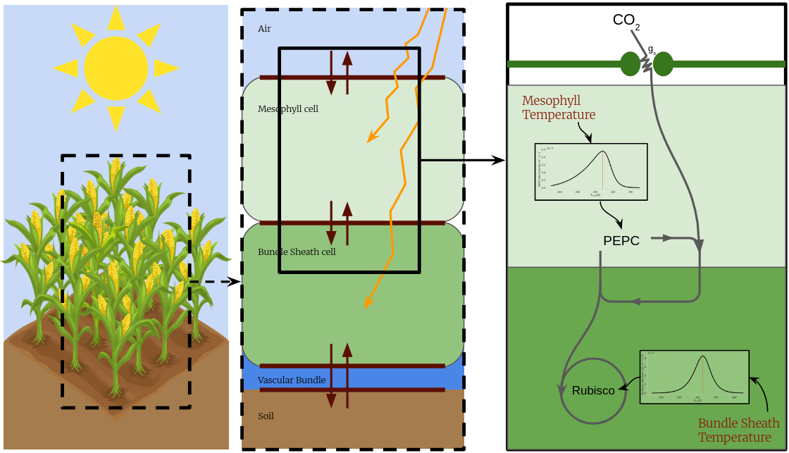
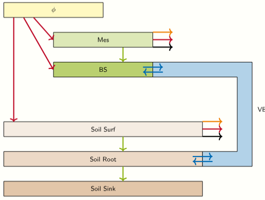
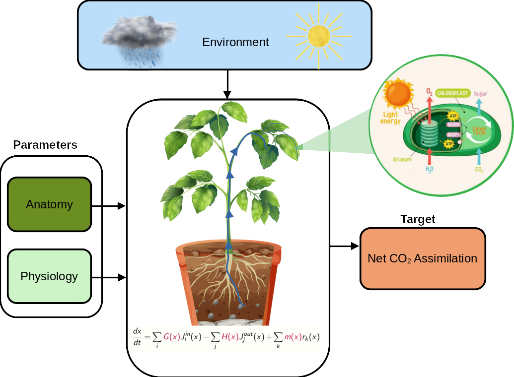
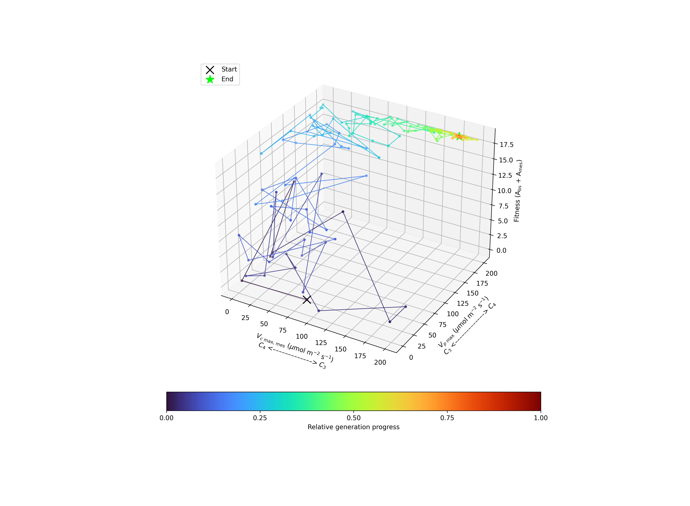
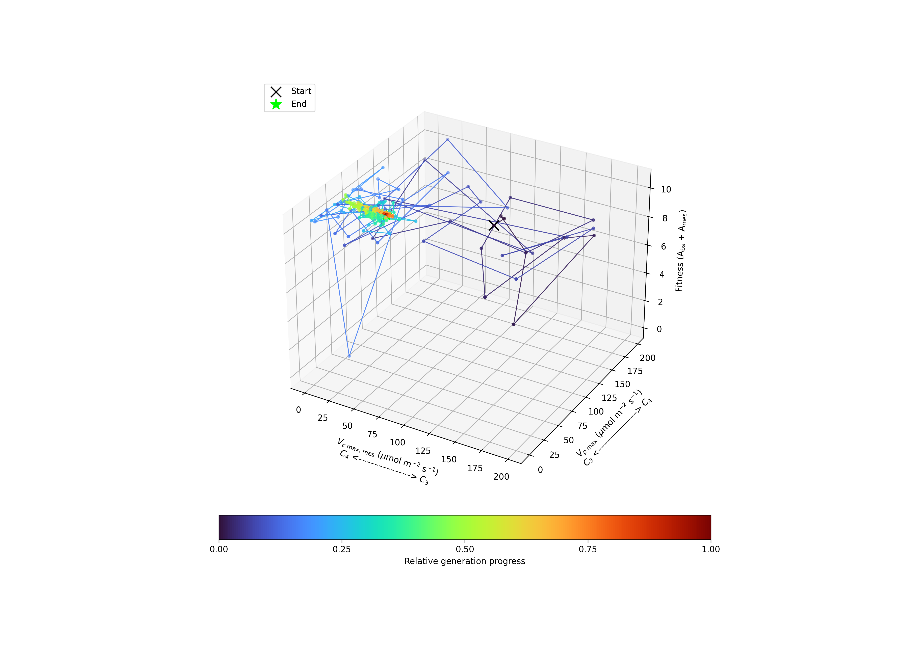
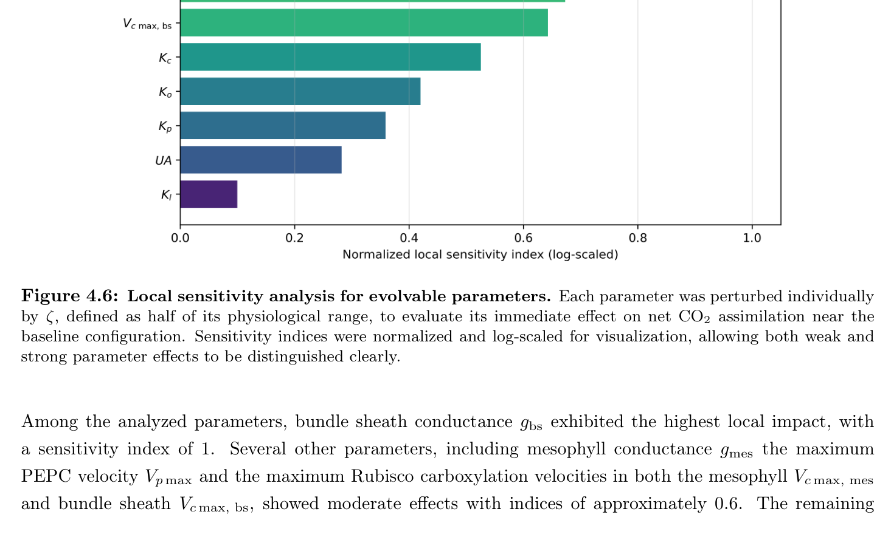
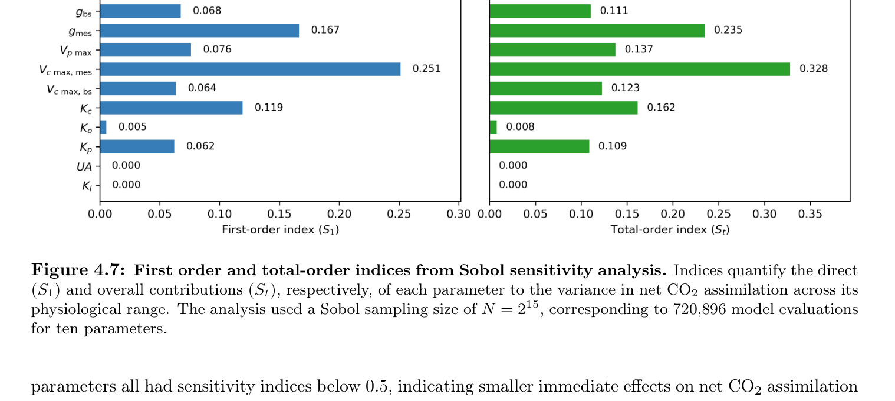
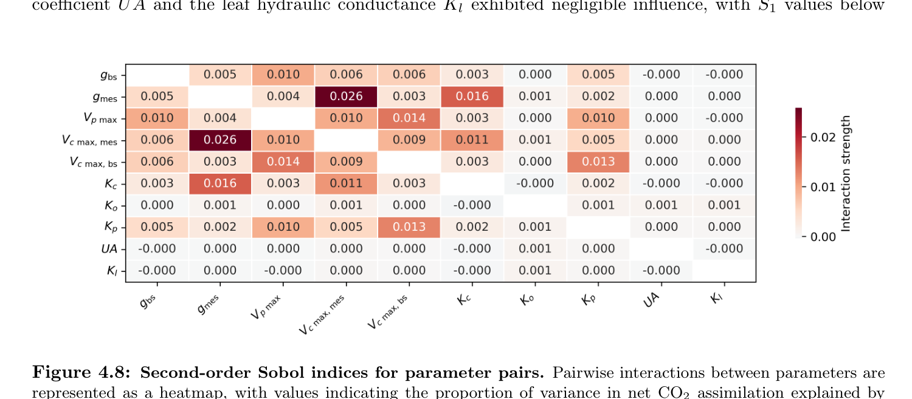
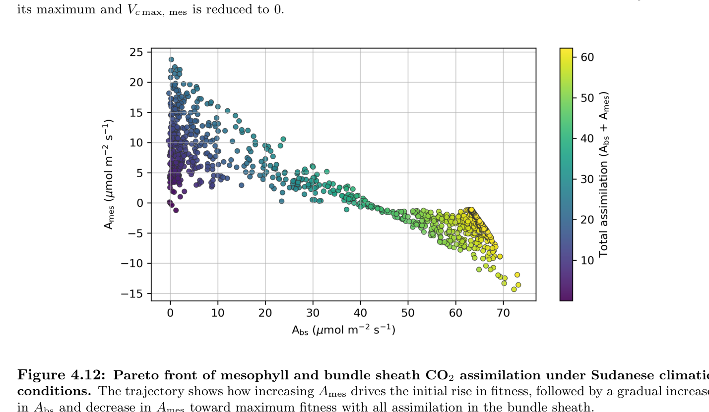

Legacy optimization trace
Sudan trajectory
Historical search trace through trait space under the Sudan forcing used in that analysis; not a biological lineage.
Flagship research · unpublished plant project
First-principles modeling across the C3–C4 continuum
A portfolio-level view of a First-principles thermo-hydraulic unpublished plant model coupling climate forcing, leaf heat transfer, hydraulics, compartmental photosynthesis, trait optimization, sensitivity analysis and evolutionary interpretation.

| Chilperic Armel Foko Kuate | Project leader: research design, model architecture, core code, major implementation, visual analysis and scientific integration. |
| Yvonne Danisch | Bachelor thesis contribution: implementation work, execution, validation and analysis within the project framework. |
| Jérémie Muller-Prokob | Scientific supervision, technical discussion and guidance. |
| Prof. Dr. Martin Lercher | PI supervision, research environment and funding. |
| Antonio Rigueiro | Additional paper-level contribution. |
This plant project is unpublished. This page is a portfolio-level presentation. It does not distribute source code and does not expose source code, notebooks, parameter files, calibration data, raw result files, Python/SALib exports, JSON/CSV reports, ZIPs, or full-model downloads. In short: no source code, no parameter files, and no full-model downloads are provided.
Simulation access:no public runnable implementation is distributed in this release.
No public runnable model is linked from this page. The full Thermoplants implementation and parameterization remain protected; the figures and methods overview are public.
Starting from plausible C3-like populations, which combinations and sequences of anatomical, photorespiratory, biochemical, hydraulic and resource-allocation changes are physiologically viable and evolutionarily accessible under different environments?
The project separates physiology, performance landscapes and biological evolution. Assimilation is an important physiological output, but it is not treated as reproductive fitness by itself. C2 photosynthesis is included only when the glycine/GDC mechanism is represented and only becomes evolutionarily important when it improves the explicit fitness mapping under the simulated conditions.
I designed a first-principles modeling framework where environmental forcing acts through physical leaf temperature, hydraulic cooling and compartment-specific biochemical kinetics. The public browser layer uses reduced surrogates only; the full unpublished model remains protected.
The model treats the leaf as a structured system rather than a homogeneous photosynthetic surface. The target scientific architecture couples carbon conservation and transport, C3 biochemistry, an explicit optional C2 photorespiratory shuttle, C4-cycle recruitment, radiative/convective/latent heat exchange, water-temperature-dependent hydraulics, anatomy-derived transport and resource allocation. Landscape optimization and biological population evolution are kept separate: optimization locates high-performing regions; only a model with inheritance, variation, selection and drift represents evolution.


| Biochemistry | C3/Farquhar-style carbon fixation is the baseline. C2 is a mechanistic subregion of the C3–C4 continuum and requires explicit photorespiratory glycine transport/GDC localization; C4 recruitment adds PEPC, bundle-sheath concentration and the associated energetic constraints. |
| Physics | Energy balances track radiation, sensible heat, latent heat and internal heat exchange with explicit sign and unit conventions. |
| Hydraulics | Soil-to-leaf water transport is separated into driving potential and hydraulic resistance. Water temperature changes viscosity and therefore ideal conduit conductance; pit, junction, outside-xylem and vulnerability effects remain separate biological terms rather than being hidden in the viscosity correction. |
| Evolution | The scientific target is replicated finite-population evolution with heritable trait variation, selection, mutation/segregation and drift. CMA-ES/NSGA-II or grids are landscape-search tools only and are not labelled as biological generations. |
| Uncertainty | Measured, literature-anchored, calibrated, derived, assumed, scenario and missing parameters are distinguished. Failed or nonphysical simulations are recorded as failures rather than silently converted into low fitness or imputed values. |
The figures below document earlier optimization and sensitivity analyses from the project. They are retained as research provenance, not promoted to validated evolutionary trajectories. Any quantitative interpretation requires the exact model revision, parameter distributions, forcing, feasibility rules and uncertainty treatment used to generate the figure.
A search trajectory toward a high-assimilation point is not an evolutionary history, and a climate-specific optimum is not evidence that natural populations followed that route. The next scientific layer tests whether candidate C3, C2, C2+ or C4-like states can arise and persist in replicated finite populations once heritable variation, developmental constraints, energetic/resource costs, reproductive mapping and drift are explicit.
Legacy optimization trace
Historical search trace through trait space under the Sudan forcing used in that analysis; not a biological lineage.

Legacy optimization trace
Historical search trace under the Niger forcing used in that analysis; interpretation depends on the original model and bounds.

Legacy optimization trace
Historical search trace under the Canada forcing used in that analysis; not evidence for an evolutionary path.

Local sensitivity
Shows which biological parameters most strongly affect assimilation near a reference state.

Global sensitivity
Separates direct effects from interaction-dependent effects under parameter uncertainty.

Interaction structure
Demonstrates that adaptation depends on combinations of traits, not one magic parameter.

Trade-off
Shows alternative allocations between mesophyll and bundle-sheath assimilation.

Diagnostic
Interpretable diagnostic for motion along the C3–C4 continuum.
| Established in the framework | Coupling of carbon, heat, water and trait allocation; explicit numerical diagnostics; sensitivity/optimization workflows. |
| Being strengthened | C2 mechanism, water-temperature-dependent hydraulics, anatomy-derived transport, dynamic seasonal forcing and resource costs. |
| Not yet established | A calibrated species-level evolutionary history, empirical reproductive fitness map, complete genetic covariance structure, or validated 2D/3D anatomy model. |
| Rule for public claims | Unknown or scenario parameters remain labelled as such; missing evidence is not replaced by a convenient default. |